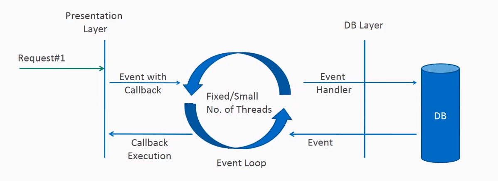

class: inverse, center, middle # Reaktív programozás Javaban ## Viczián István <br /> istvan.viczian@training360.com <br /> http://jtechlog.hu <br />III. Országos IT Megmérettetés --- # Reaktív manifesztó * Reszponzivitás (Responsive): a rendszernek gyorsan választ kell adnia * Ellenállóképesség (Resilient): rendszereknek reszponzívaknak kell maradniuk hiba esetén is * Elaszticitás: reszponzivitás nagy terhelés esetén is * Üzenetvezéreltség: rendszerek elemei aszinkron, nem blokkoló módon, üzenetekkel kommunikálnak [Reactive manifesztó](https://www.reactivemanifesto.org/) --- # Reaktív manifesztó következményei * Programozási paradigma, ahol a rendszer az adatelemek szinkron folyamára reagál, komponensek az adatelem megjelenésekor reagálnak * Back pressure: mechanizmus arra, hogy a termelő ne árassza el a fogyasztót * Non-blocking back pressure: fogyasztó kéri a következő x elemet, amit fel tud dolgozni --- # Reaktív megvalósítások <br /> Javaban * Eclipse Vert.x * Akka * RxJava * Project Reactor --- # Java 9 Flow API  --- # Funkcionális Reaktív Programozás * Funkcionális stílusban kivitelezett reaktív programozás * Alapja a mellékhatás és állapot nélküli függvények * Deklaratív * Sok boilerplate kód eliminálása * Könnyebb karbantarthatóság, jobb kódminőség * Defacto standard megoldások * Callback-hell ellen * Pipeline or stream of data flow * Újrafelhasználható operátorok --- # Spring WebFlux  --- # Spring WebFlux * Spring MVC alternatíva * Spring MVC tapasztalataira építve * Hasonló megközelítés, egymás mellett élő, független implementációk * Reactive HTTP API-ra építve (Servlet API helyett) * Default web konténer: Netty * Router functions * WebClient: non-blocking, reactive HTTP kliens --- # R2DBC * Reactive Streams * Relációs adatbázisokhoz, pl. H2, PostgreSQL, Microsoft SQL Server, MySQL --- # Spring Data R2DBC * `DatabaseClient` fluent API * Repository implementáció generálás interfész alapján